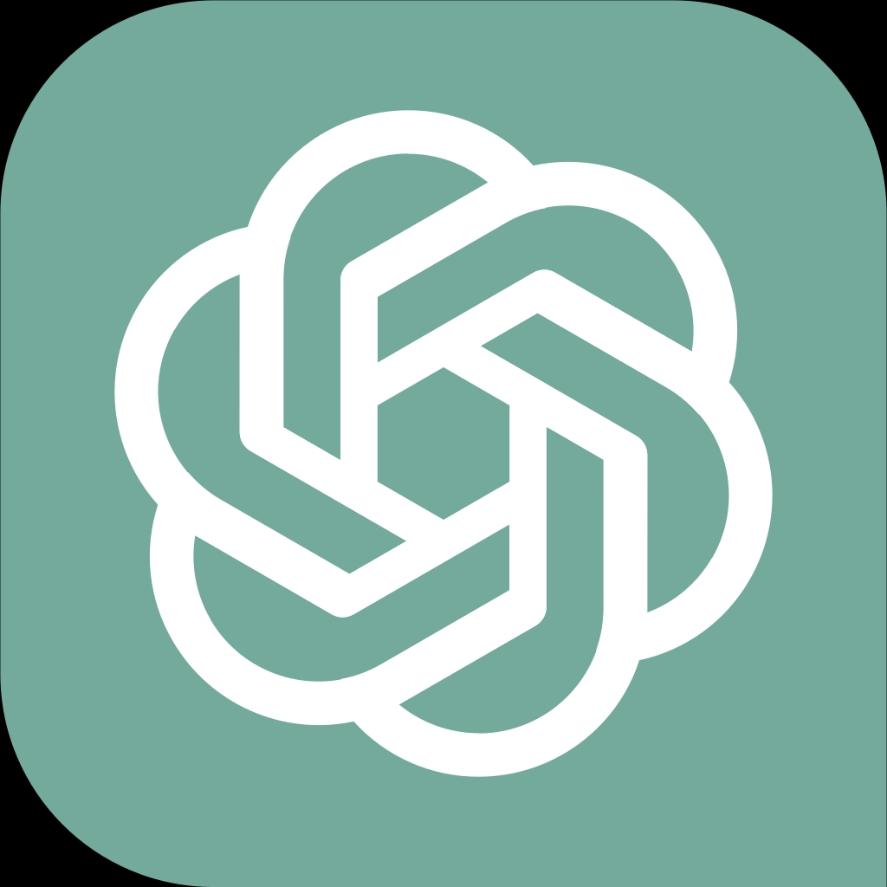
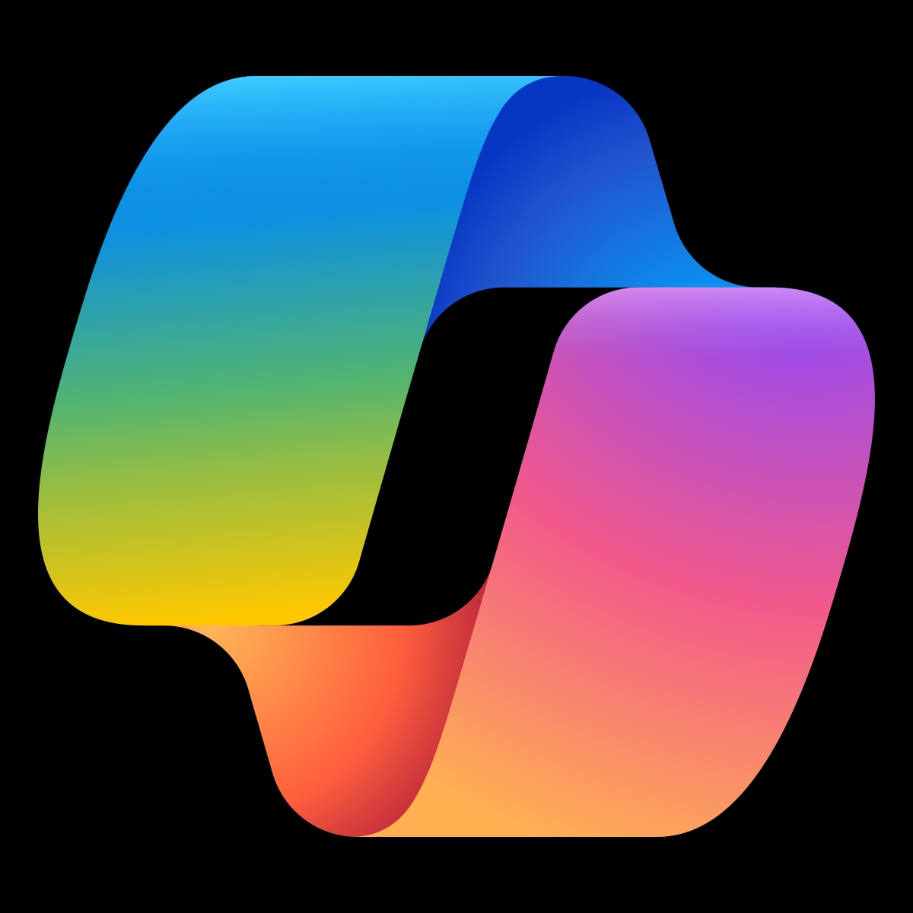

ChatGPT
چتبات قدرتمند برای تولید متن و پاسخگویی

Copilot
دستیار هوشمند مایکروسافت برای کدنویسی و محتوا
DeepSeek
چتبات مبتنیبر زبان چینی و انگلیسی با تحلیل منطقی
Le Chat Mistral
چتبات سریع و سبک برای مکالمات روزمره
Grok
چتبات شبکه X برای تحلیل اخبار و گفتگوهای اجتماعی
Poe
پلتفرم آزمایشی برای چتباتهای هوش مصنوعی مختلف